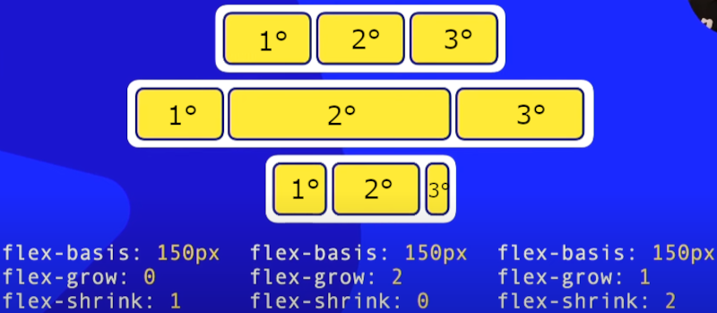

align-self - (alinhamento dos itens de um contêiner)
align-self: auto; - padrão
Herda as características de alinhamento vertical de seu pai (align-content ou align-items).
align-self: flex-start;
Alinhamento grudado com o cross-start.
align-self: flex-end;
Alinhamento grudado com o cross-end.
align-self: center;
Calcula o meio entre o cross-start e o cross-end e deixa os elementos no centro.
align-self: stretch;
Estica o elemento para que caiba no espaço inteiro do contêiner.
Agora segue os exemplos de todos os align-self:
auto
flex-start
flex-end
center
stretch
flex-basis - (define o tamanho inicial dos elementos flex)
flex-basis: auto; - padrão
Define a largura ou altura máxima do elemento flex antes que ele seja redimensionado por outras propriedades.
Exemplo sem quebra de linha (flex-flow: row nowrap)
texto de exemplo
texto de exemplo maior
texto de exemplo maior ainda
texto de exemplo maior ainda, para conseguir ver o flex-basis: auto
texto se adapta ao tamanho de acordo com o texto
outro texto de exemplo
Exemplo com quebra de linha (flex-flow: row wrap)
texto de exemplo
texto de exemplo maior
texto de exemplo maior ainda
texto de exemplo maior ainda, para conseguir ver o flex-basis: auto
texto se adapta ao tamanho de acordo com o texto
outro texto de exemplo
flex-basis: n°px
Parecido com width, ele define um tamanho em pixels para os elementos, porém se diminuir a tela ele adapta seu tamanho ao contêiner.
Exemplo sem quebra de linha (flex-flow: row nowrap)
texto de exemplo
texto de exemplo maior
texto de exemplo maior ainda
texto de exemplo maior ainda, para conseguir ver o flex-basis: auto
texto se adapta ao tamanho de acordo com o texto
outro texto de exemplo
Exemplo com quebra de linha (flex-flow: row wrap)
texto de exemplo
texto de exemplo maior
texto de exemplo maior ainda
texto de exemplo maior ainda, para conseguir ver o flex-basis: auto
texto se adapta ao tamanho de acordo com o texto
outro texto de exemplo
flex-grow / flex-shrink (define se os itens flexíveis se expandem ou se contraem em um contêiner)
flex-grow: 0; - padrão
Não permite a expansão do elemento flexível.
A
B
C
D
flex-grow: 1;
Faz a expansão do elemento flexível.
A
B
C
D
flex-shrink: 1; - padrão
Se a tela diminuir, os elementos também vão diminuir (mas não ficará menor que seu conteúdo).
A
B
C
D
flex-shrink: 0;
Não permite a redução do elemento.
A
B
C
D
Agora juntando as 2 propriedades
flex-grow: 0; + flex-shrink: 1; - padrão
Não permite a expansão do elemento flexível, e se a tela diminuir, os elementos também vão diminuir (mas não ficará menor que seu conteúdo).
A
B
C
D
flex-grow: 0; + flex-shrink: 0;
Não permite a expansão do elemento flexível, e não permite a redução do elemento.
A
B
C
D
flex-grow: 1; + flex-shrink: 1;
Faz a expansão do elemento flexível, e se a tela diminuir, os elementos também vão diminuir (mas não ficará menor que seu conteúdo).
A
B
C
D
flex-grow: 1; + flex-shrink: 0;
Faz a expansão do elemento flexível, e não permite a redução do elemento.
A
B
C
D
Também conseguimos mudar o valor, assim mudando a proporção. Por exemplo:
O primeiro contêiner é ele normal (sem aumentar nem diminuir), o segundo contêiner é ele expandido, já o terceiro contêiner é ele reduzido.

Observe que todos os elementos tem flex-basis: 150px;, porém os flex-grow e flex-shrink são diferentes.
O 1° elemento tem um flex-grow: 0; (não permite a expansão do elemento) e flex-shrink: 1; (reduz se a tela for diminuida) = quando aumenta a tela, o elemento não muda, mas quando diminui a tela, o elemento reduz.
O 2° elemento tem um flex-grow: 2; (faz expansão do elemento) e flex-shrink: 0; (não permite a redução do elemento) = quando aumenta a tela, o elemento expande, e quando diminui a tela, o elemento não reduz.
O 3° elemento tem um flex-grow: 1; (não permite a expansão do elemento) e flex-shrink: 2; (reduz se a tela for diminuida) = quando aumenta a tela, o elemento expande, e quando diminui a tela, o elemento reduz.
Da para perceber que quando expandido o 2° elemento aumentou mais do que o 3° elemento, isso porque, o valor do 2° elemento "fala" que ele vai aumentar 2x mais que o 3° elemento. Isso também ocorre com o 1° elemento e o 3° elemento quando a tela é reduzida. Um valor maior "fala" que o elemento vai ser expandido ou reduzido em dobro, em triplo, etc. Agora vou mostrar outros exemplos (aumente e diminua a tela):